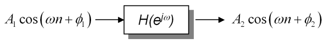
where n =...-2,-1,0,1,2,...
When the input to a discrete LTI system is a sinusoid with a fixed normalized frequency as shown above, the output is also a sinusoid. The output signal has the same frequency but a different amplitude and phase than the input. This transformation is accomplished through the frequency response of the system.
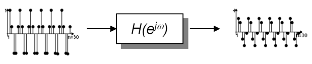
Consider the filtering example above. A sinusoid of a fixed frequency is the input, and a sinusoid of the same frequency but with amplitude nearly 2.5 times the input and seventy degree phase shift is the output. How are the multiplication of the amplitude and phase addition accomplished? The frequency response of the above system is presented below:
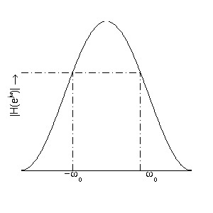 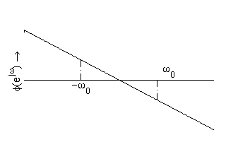
The first plot represents the magnitude of the frequency
response versus normalized input frequency; this quantity amplifies or
attenuates the amplitude of the input signal by directly
multiplying it. In this case, the magnitude plot (maximum
value of 4) has a value of nearly 2.5 at the input signal's frequency and thus
its amplitude increases correspondingly when multiplied. The second plot
shows the phase of the frequency response versus normalized input frequency;
this affects the phase of the input signal by directly adding
to it. For this example, the phase plot has a value of nearly -pi/2.5 or
-70 degrees at the input signal's frequency, and therefore shifts the signal
from zero degrees phase to ninety degrees. Note that the negative
frequencies are also shown on each plot due to the conjugate symmetry of
sinusoids (see Theory in
Equations). The frequency response was calculated, however, using
the positive frequency.
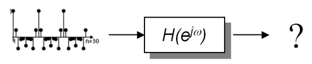
Because LTI Systems are linear by definition, the principle of superposition allows us to envision far more complicated input signals such as square waves and triangular waves as split up into their respective harmonics through Fourier analysis. Each component is processed separately before all of them are added back together. Let's consider an arbitrary harmonic signal input such as the one shown to the right. First the frequency components of the signal could be obtained, the frequency response applied to each of these components, and then the result summed up again to get the final signal. A graphical depiction of this process is shown below (barring the Fourier analysis, which was magically done for you). The frequency response used here is the same as above, though the input components are all of different frequencies:
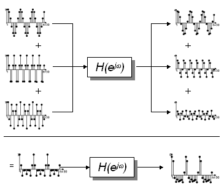
The plots above are roughly to scale and all are plotted against the same number
of samples. The top input component has half the frequency of the middle
component, while the bottom component has twice the frequency of the middle. All
the inputs have the same amplitude. The amplitudes have increased on the
output, depending on the filter response at that particular
frequency. Similarly, the phase shifts are also of different magnitudes (you
will have to look carefully to notice the phase differences). When the
output components are added together the desired output is attained. Note
that the output signal happens to be the same shape as the input because the
phase of the frequency response is linear (see plot of phase response above), i.e.,. all frequencies are
delayed in time by the same amount and thus the signal is not distorted in any
way. If the phase response is not perfectly linear for the entire range of
frequencies from -pi to pi, the individual frequency components will not add up
the same way as they did in the input. The sum will still nonetheless be a
periodic signal, but of a different shape.
Having demonstrated the filtering of an arbitrary harmonic input signal, the process of finding the output of an LTI system using the frequency response can be summarized as follows:
As opposed to impulse response, it is difficult to completely understand the frequency response without looking at it mathematically. This explanation is incomplete without the Theory In Equations given below. Please ensure you read this section as we establish a relationship between impulse response and the frequency response, and mathematically work an example of filtering using frequency response.
If the input to an LTI system is a complex exponential signal, the impulse response then becomes the sum of a series of complex exponentials as shown below, where x[n-k] is a complex exponential with a given amplitude and frequency. This transformation is shown below.
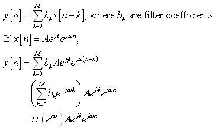
This sum of exponentials is known as the Frequency Response or Transfer Function of the system, because its only parameter is the normalized frequency of the input signal. For each value of frequency the function produces a complex amplitude, which is then multiplied by the input signal to give the output of the system. This results in the amplitude being scaled by some factor and the phase being shifted. The original frequency of the input is thus preserved and only its complex amplitude is affected. Because it only has an effect on the magnitude and phase of the output, the frequency response is also called the Gain of the system.
Examining the above derivation closely, one can easily transform the frequency response into the impulse response and vice versa. As an example, a length three impulse response with coefficients {1,2,1} can be described as a frequency response like so:
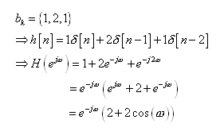
In the impulse response expression above, the coefficients are kept and the unit impulses are simply transformed into complex exponentials with an angle multiple equal to the delay of the impulse. This result comes directly from the derivation above where we separated the frequency response from the signal itself. Using standard algebra and Euler's relation, the sum of exponentials is then simplified into expressions involving sines or cosines.
As you can see, the frequency response has two distinct
portions: the complex exponential on the left gives the phase of the
response and the quantity on the right gives the magnitude of the response.
This particular frequency response will produce plots similar to those shown in
the Theory In Words section
above, and it belongs to a category of filters known as low-pass filters because
it either amplifies or maintains the amplitude of low-frequency signals while
diminishing the magnitude of high-frequency signals. The accepted range of
low-frequency signals is called the passband
of the filter, and is separated from the rejected range or stopband at a point called the cut-off frequency.
The Frequency response
of an LTI system can be therefore be defined as any arbitrary sum of complex
exponentials.
Now that we have explained the mathematical background of frequency response, let us compute the output of a system for an arbitrary input. As shown below, the input is a complex exponential. The frequency response is computed for the signal's frequency and multiplied by it to find the output of the system:
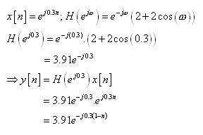
As we mentioned in the section above, a short cut exists for calculating the frequency response of a sinusoidal signal. A cosine can be expressed as a sum of complex exponentials by Euler's relation, both of which are conjugates to each other with one-half the amplitude of the original sinusoid. It is left as an exercise to the reader to mathematically show that the result of applying the frequency response to each of these components and adding them back together yields the same result as applying the frequency response only to the positive frequency, multiplying its magnitude directly by the amplitude of the input sinusoid and adding its phase directly to the phase of the input sinusoid. A computational example is shown below using the same frequency response as above but with a sinusoid as the input:
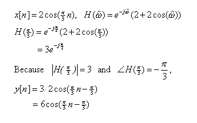
You may verify this result through the Discrete LTI Demo tool and view it graphically by setting up the input sinusoid with the same parameters and specifying a user defined filter with the same coefficients as we used above.
The above example establishes the final equation for sinusoidal LTI systems; generalizing it to include a DC (zero-frequency) component gives the following:
| FREQUENCY RESPONSE OF A SINUSOIDAL SIGNAL: | 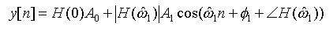 |
Does it all make sense to you? If you are not sure go over it one more time before moving on with the rest of the tutorial.
If you still do not get it, let me know what is confusing you. Send me by clicking on my name in the Overview section. I want to make this tutorial understandable and any feedback is appreciated!